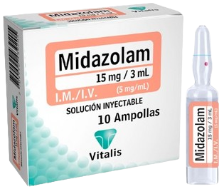
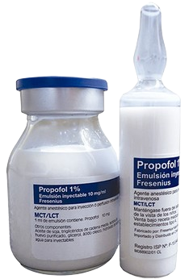
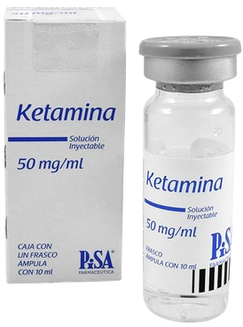

Midazolam (Ansiolíticos - Sedantes)
Medicamento perteneciente a las benzodiacepina que produce grados diversos de depresión del sistema nervioso central.
Mecanismo de Acción
Actúa de manera selectiva sobre los receptores GABA que median la transmisión inhibitoria sináptica a través del sistema nervioso central, disminuyendo la excitabilidad neuronal.
Indicaciones
Insomnio, Sedación y premedicación antes de procedimientos quirúrgicos, Ansiolítico Hipnótico Anticonvulsivante
Contraindicaciones
Hipersensibilidad a benzodiazepinas, Enfermedades neuromusculares como distrofias, miotonías y en miastenia gravis, EPOC, insuficiencia respiratoria y hepática severa, síndrome de apnea del sueño.
Presentaciones
-
Comprimidos de 7.5 y 15 mg
-
Solución inyectable 5mg/5 ml y 15mg/3 ml
Cuidados de enfermería
No debe administrarse simultáneamente con depresores del sistema nervioso, no utilizar a largo plazo porque produce dependencia y tolerancia. Sus efectos aumentan en personas mayores.
Efectos adversos
Frecuentes:Somnolencia, sedación prolongada, desorientación, ataxia, depresión, vértigo, confusión, desorientación, dificultad para concentrarse, alteraciones de la memoria, euforia, alucinaciones, depresión respiratoria, hipotensión.
Poco frecuentes:Náusea, vómito, fatiga, irritabilidad, ira, agresión, hostilidad, agitación, alucinaciones, trastornos de la libido, pensamientos anormales, hiperactividad psicomotora.
Raras:Depresión respiratoria, apnea, paro respiratorio, dolor abdominal, diarrea, estreñimiento, resequedad de boca, visión borrosa, aumento de la presión intraocular, hipotensión, bradicardia, paro cardiaco, cefalea, disartria.
Propofol
Agente anestésico intravenoso de acción ultracorta.
Mecanismo de Acción
Actúa potenciando la acción del neurotransmisor GABA, que inhibe la transmisión sináptica mediante un mecanismo de hiperpolarización originado por la “apertura de los canales de cloro”.
Indicaciones
Sedación superficial
Hipnótico. Inducción y mantenimiento de la anestesia
Tratamiento de las náuseas y vómitos
Contraindicaciones
Alergia conocida al Propofol, huevo, soya o lecitina. Insuficiencia cardíaca severa. Descompensación de enfermedades pulmonares
Hipotensión severa
Presentaciones
-
Solución inyectable
-
Ampolla 200 mg / 20 ml
-
Vial 1 gr / 50 ml
Cuidados de enfermería
Monitorear constantemente las funciones vitales, especialmente la frecuencia respiratoria, la presión arterial y la saturación de oxígeno, debido al riesgo de depresión respiratoria y hemodinámica.
Vigilar a pacientes con antecedentes de reacciones alérgicas graves.
Lavar vena con 5cc de SSN luego de inyectado el medicamento.
Vigilar la aparición de dolor en el sitio de inyección, enrojecimiento o tromboflebitis.
Garantizar un ambiente seguro para prevenir caídas o accidentes.
Efectos adversos
Frecuentes:Náusea, vómito, hipotensión, depresión respiratoria, apena, movimientos involuntarios, ardor en el sitio de la inyección.
Poco frecuentes:Bradicardia, reacciones alérgicas, convulsiones.
Ketamina
Anestésico de efecto rápido que a dosis altas, causa intoxicación y alucinaciones similares a las del LSD.
Mecanismo de Acción
Produce sedación, inmovilidad, amnesia y marcada analgesia. Puede deprimir selectivamente el sistema tálamo-neocortical antes de bloquear significativamente los sistemas límbico y reticular activador.
Inducción de anestesia
Hipersensibilidad Indicaciones
Complementar otros agentes anestésicos de menor potencia
Contraindicaciones
Insuficiencia cardiaca
IAM reciente
HTA severa
Coartación de aorta
Glaucoma
Trauma cerebral
Hemorragia intracraneal
Presentaciones
-
Solución inyectable 500mg/10 ml y 50mg/ml
Cuidados de enfermería
Administrar lentamente, para reducir efectos secundarios indeseados como la hipotensión o alucinaciones.
Usar con precaución en casos de alcoholismo activo, taquiarritmias, lesión ocular, glaucoma, enfermedad psiquiátrica, tirotoxicosis.
Administrar oxígeno suplementario si es necesario.
Efectos adversos
Frecuentes:Reacciones de urgencia (alteraciones en el estado de ánimo, en la imagen corporal, delirio, disociaciones), aumento de la presión arterial, taquicardia, movimientos tonicoclónicos, temblor, vocalización.
Poco frecuentes:Bradicardia, hipotensión, depresión respiratoria que puede conducir a apnea, vómito, anorexia, visión borrosa, dolor en el sitio de inyección, reacciones de hipersensibilidad.
Raras:Arritmias cardiacas, laringoespasmo.